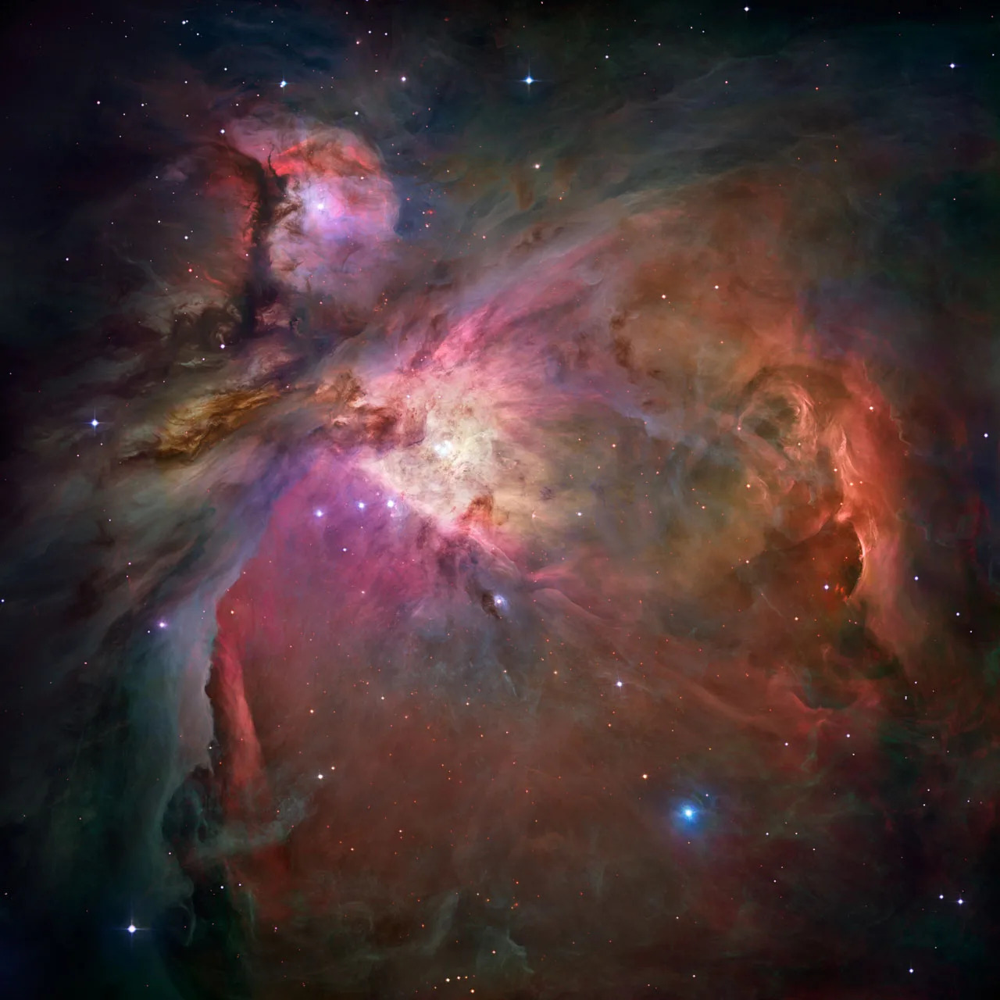
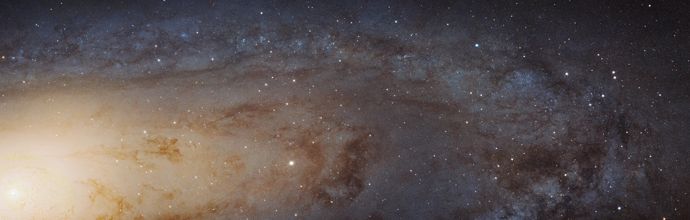
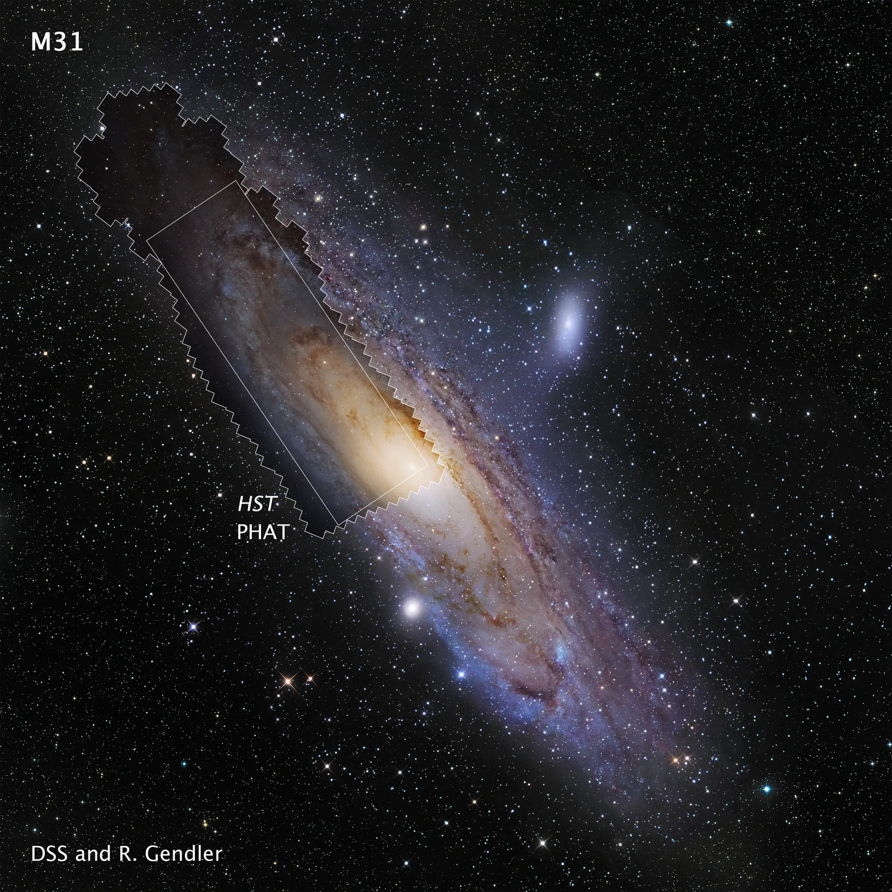
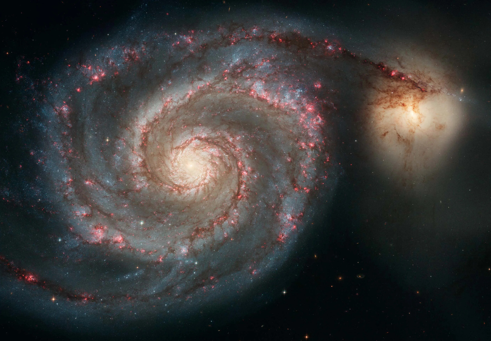

Orion Nebula (M42)
- Distance from Earth: Approximately 1,344 light-years
- Type: Emission nebula
- Key Features: Located in the Orion constellation, the Orion Nebula is one of the brightest nebulae visible to the naked eye. It is a stellar nursery, with new stars forming within its clouds of gas and dust.
- Fun Fact: The Orion Nebula is often studied by astronomers due to its proximity and the variety of stellar processes occurring within!
Carina Nebula (NGC 3372)

- Distance from Earth: About 7,500 light-years
- Type: Emission nebula
- Key Features: The Carina Nebula is home to several massive stars, including Eta Carinae. It is known for its intricate structure and is one of the largest nebulae in the southern sky.
- Fun Fact: The Carina Nebula contains some of the most massive stars known, with some estimated to be over 100 times the mass of the Sun!
Eagle Nebula (M16)

- Distance from Earth: Approximately 7,000 light-years
- Type: Emission nebula
- Key Features: The Eagle Nebula is famous for the "Pillars of Creation," towering columns of gas and dust where new stars are forming. It is a captivating region for both amateur and professional astronomers.
- Fun Fact: The Pillars of Creation were made famous by the Hubble Space Telescope, capturing stunning images that reveal the beauty of star formation!
Ring Nebula (M57)

- Distance from Earth: Approximately 2,300 light-years
- Type: Planetary nebula
- Key Features: The Ring Nebula is a prominent example of a planetary nebula, showcasing a bright ring of gas surrounding a central white dwarf star. It is a favorite among amateur astronomers due to its distinct shape.
- Fun Fact: The Ring Nebula's appearance is due to the ejection of outer layers from a dying star, leaving behind the hot core that illuminates the surrounding gas!
Milky Way Galaxy

- Distance from Earth: 0 light-years (our galaxy)
- Type: Spiral galaxy
- Key Features: The Milky Way is a barred spiral galaxy containing billions of stars, including our Sun. Its structure includes spiral arms radiating from the central bulge, where a supermassive black hole resides.
- Fun Fact: The Milky Way is so large that it is estimated to contain over 100 billion stars, and it takes about 225 million years for the Sun to orbit the center of the galaxy once!
Andromeda Galaxy (M31)
 - Distance from Earth: Approximately 2.537 million light-years
- Type: Spiral galaxy
- Key Features: The Andromeda Galaxy is the nearest spiral galaxy to the Milky Way and is on a collision course with our galaxy. It contains over a trillion stars and is a major target for astronomical studies, providing insights into galaxy formation and evolution.
- Fun Fact: Andromeda and the Milky Way are expected to collide in about 4.5 billion years, ultimately merging into a single galaxy!
Sombrero Galaxy (M104)

- Distance from Earth: About 28 million light-years
- Type: Spiral galaxy
- Key Features: Known for its bright nucleus and prominent dust lane, the Sombrero Galaxy resembles a sombrero hat. Its unique appearance makes it a popular subject in astronomical photography and a significant example of galaxy morphology.
- Fun Fact: The Sombrero Galaxy is home to a supermassive black hole at its center, with a mass estimated to be about a billion times that of the Sun!
Whirlpool Galaxy (M51)
- Distance from Earth: Approximately 23 million light-years
- Type: Spiral galaxy
- Key Features: The Whirlpool Galaxy is notable for its interaction with a smaller galaxy (NGC 5195), which provides insights into galactic interactions and formation processes. Its spiral arms and bright core make it a classic example of a spiral galaxy.
- Fun Fact: The Whirlpool Galaxy was one of the first galaxies to be classified as a spiral galaxy, making it an essential object of study for astronomers!